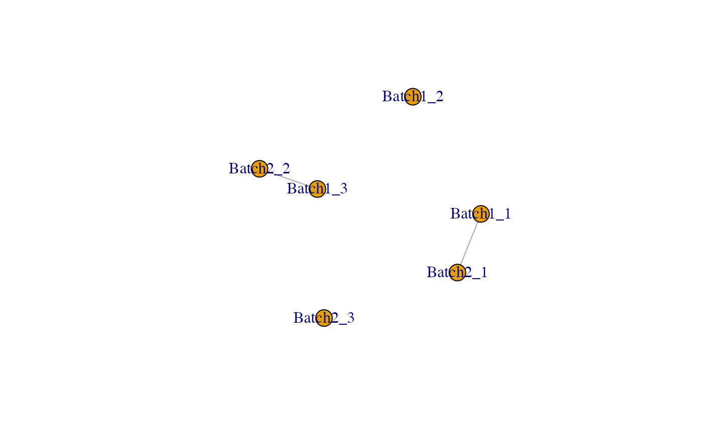
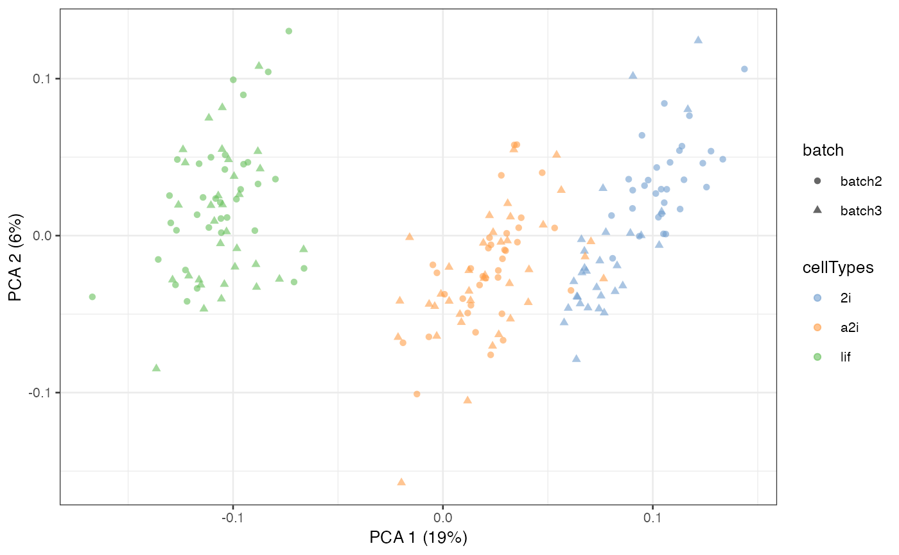

Get Adjusted Matrix with scMerge2 parameter estimated
getAdjustedMat(
exprsMat,
fullalpha,
ctl = rownames(exprsMat),
adjusted_means = NULL,
ruvK = 20,
return_subset_genes = NULL
)A gene (row) by cell (column) matrix to be adjusted.
A matrix indicates the estimated alpha returned by scMerge2().
A character vector of negative control. It should have a non-empty intersection with the rows of exprsMat.
A rowwise mean of the gene by cell matrix
An integer indicates the number of unwanted variation factors that are removed, default is 20.
An optional character vector of indicates the subset of genes will be adjusted.
Returns the adjusted matrix will be return.
## Loading example data
data('example_sce', package = 'scMerge')
## Previously computed stably expressed genes
data('segList_ensemblGeneID', package = 'scMerge')
## Running an example data with minimal inputs
library(SingleCellExperiment)
#> Loading required package: SummarizedExperiment
#> Loading required package: MatrixGenerics
#> Loading required package: matrixStats
#>
#> Attaching package: ‘MatrixGenerics’
#> The following objects are masked from ‘package:matrixStats’:
#>
#> colAlls, colAnyNAs, colAnys, colAvgsPerRowSet, colCollapse,
#> colCounts, colCummaxs, colCummins, colCumprods, colCumsums,
#> colDiffs, colIQRDiffs, colIQRs, colLogSumExps, colMadDiffs,
#> colMads, colMaxs, colMeans2, colMedians, colMins, colOrderStats,
#> colProds, colQuantiles, colRanges, colRanks, colSdDiffs, colSds,
#> colSums2, colTabulates, colVarDiffs, colVars, colWeightedMads,
#> colWeightedMeans, colWeightedMedians, colWeightedSds,
#> colWeightedVars, rowAlls, rowAnyNAs, rowAnys, rowAvgsPerColSet,
#> rowCollapse, rowCounts, rowCummaxs, rowCummins, rowCumprods,
#> rowCumsums, rowDiffs, rowIQRDiffs, rowIQRs, rowLogSumExps,
#> rowMadDiffs, rowMads, rowMaxs, rowMeans2, rowMedians, rowMins,
#> rowOrderStats, rowProds, rowQuantiles, rowRanges, rowRanks,
#> rowSdDiffs, rowSds, rowSums2, rowTabulates, rowVarDiffs, rowVars,
#> rowWeightedMads, rowWeightedMeans, rowWeightedMedians,
#> rowWeightedSds, rowWeightedVars
#> Loading required package: GenomicRanges
#> Loading required package: stats4
#> Loading required package: BiocGenerics
#>
#> Attaching package: ‘BiocGenerics’
#> The following objects are masked from ‘package:stats’:
#>
#> IQR, mad, sd, var, xtabs
#> The following objects are masked from ‘package:base’:
#>
#> Filter, Find, Map, Position, Reduce, anyDuplicated, aperm, append,
#> as.data.frame, basename, cbind, colnames, dirname, do.call,
#> duplicated, eval, evalq, get, grep, grepl, intersect, is.unsorted,
#> lapply, mapply, match, mget, order, paste, pmax, pmax.int, pmin,
#> pmin.int, rank, rbind, rownames, sapply, setdiff, sort, table,
#> tapply, union, unique, unsplit, which.max, which.min
#> Loading required package: S4Vectors
#>
#> Attaching package: ‘S4Vectors’
#> The following object is masked from ‘package:utils’:
#>
#> findMatches
#> The following objects are masked from ‘package:base’:
#>
#> I, expand.grid, unname
#> Loading required package: IRanges
#> Loading required package: GenomeInfoDb
#> Loading required package: Biobase
#> Welcome to Bioconductor
#>
#> Vignettes contain introductory material; view with
#> 'browseVignettes()'. To cite Bioconductor, see
#> 'citation("Biobase")', and for packages 'citation("pkgname")'.
#>
#> Attaching package: ‘Biobase’
#> The following object is masked from ‘package:MatrixGenerics’:
#>
#> rowMedians
#> The following objects are masked from ‘package:matrixStats’:
#>
#> anyMissing, rowMedians
scMerge2_res <- scMerge2(exprsMat = logcounts(example_sce),
batch = example_sce$batch,
ctl = segList_ensemblGeneID$mouse$mouse_scSEG,
return_matrix = FALSE)
#> [1] "Cluster within batch"
#> Warning: You're computing too large a percentage of total singular values, use a standard svd instead.
#> Warning: You're computing too large a percentage of total singular values, use a standard svd instead.
#> [1] "Normalising data"
#> [1] "Constructing pseudo-bulk"
#> Dimension of pseudo-bulk expression: [1] 1047 131
#> [1] "Identifying MNC using pseudo-bulk:"

#> [1] "Running RUV"
cosineNorm_mat <- batchelor::cosineNorm(logcounts(example_sce))
adjusted_means <- DelayedMatrixStats::rowMeans2(cosineNorm_mat)
newY <- getAdjustedMat(cosineNorm_mat, scMerge2_res$fullalpha,
ctl = segList_ensemblGeneID$mouse$mouse_scSEG,
ruvK = 20,
adjusted_means = adjusted_means)
assay(example_sce, "scMerge2") <- newY
example_sce = scater::runPCA(example_sce, exprs_values = 'scMerge2')
scater::plotPCA(example_sce, colour_by = 'cellTypes', shape = 'batch')
